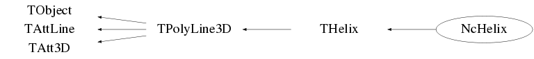

class NcHelix: public THelix
Class NcHelix Representation and extrapolation of NcTracks in a magnetic field. This class is meant to provide a means to display and extrapolate NcTrack objects in the presence of a constant homogeneous magnetic field. For track/event displays the line width, colour etc... can be set using the standard facilities (see TAttLine). By default the linewith is set to 2 and the colour set to -1 in the constructor. The latter results in an automatic colour coding according to the track charge with the convention positive=red neutral=green negative=blue. To indicate the track starting point, the memberfunction SetMarker() may be used. By default no marker will be displayed. Examples : Display and extrapolation of individual tracks Float_t vec[3]; NcPosition r1; Nc3Vector p; NcTrack t; vec[0]=0; vec[1]=0; vec[2]=0; r1.SetVector(vec,"car"); vec[0]=1; vec[1]=0; vec[2]=0.3; p.SetVector(vec,"car"); t.Set3Momentum(p); t.SetBeginPoint(r1); t.SetCharge(-1); t.SetMass(0.139); // The magnetic field vector in Tesla Nc3Vector b; vec[0]=0; vec[1]=0; vec[2]=1; b.SetVector(vec,"car"); NcHelix* helix=new NcHelix(); helix->SetB(b); helix->SetTofmax(1e-7); TCanvas* c1=new TCanvas("c1","c1"); TView* view=new TView(1); view->SetRange(-1000,-1000,-1000,1000,1000,1000); view->ShowAxis(); // Track displays Double_t range[2]={0,600}; helix->Display(&t,range,3); t.SetCharge(-t.GetCharge()); helix->Display(&t); // Track extrapolation Double_t pars[3]={550,0.001,3}; NcPosition* rext=helix->Extrapolate(&t,pars); if (rext) rext->Data(); Online display of events generated via NcCollider Int_t nevents=5; // Number of events to be generated Int_t jrun=1; // The run number of this batch of generated events cout << " ***" << endl; cout << " *** NcCollider run for " << nevents << " events." << endl; cout << " ***" << endl; NcCollider* gen=new NcCollider(); gen->OpenFortranFile(6,"dump.log"); gen->SetVertexMode(2); gen->SetResolution(1e-4); gen->SetRunNumber(jrun); gen->SetPrintFreq(1); gen->SetSpectatorPmin(0.01); Int_t zp=1; Int_t ap=1; Int_t zt=2; Int_t at=4; gen->Init("fixt",zp,ap,zt,at,158); NcHelix* helix=new NcHelix(); Float_t vec[3]={0,2,0}; Nc3Vector b; b.SetVector(vec,"car"); helix->SetB(b); helix->Refresh(-1); // Refresh display after each event TCanvas* c1=new TCanvas("c1","c1"); TView* view=new TView(1); view->SetRange(-200,-200,-200,200,200,200); view->ShowAxis(); // Prepare random number sequence for this run // to obtain the number of participants for each event NcRandom rndm(abs(jrun)); Float_t* rans=new Float_t[nevents]; rndm.Uniform(rans,nevents,2,ap+at); Int_t npart=0; Int_t ntk=0; for (Int_t i=0; i<nevents; i++) { npart=rans[i]; gen->MakeEvent(npart); NcEvent* evt=gen->GetEvent(); if (evt) { helix->Display(evt); c1->Update(); gSystem->Sleep(5000); // Some delay to keep the display on screen } } --- Author: Nick van Eijndhoven 17-jun-2004 Utrecht University - Modified: NvE $Date: 2010-03-19 11:10:02 +0100 (Fri, 19 Mar 2010) $ NCFS
Function Members (Methods)
public:
| NcHelix() | |
| NcHelix(const NcHelix& h) | |
| virtual | ~NcHelix() |
| void | TObject::AbstractMethod(const char* method) const |
| virtual void | TObject::AppendPad(Option_t* option = "") |
| virtual void | TObject::Browse(TBrowser* b) |
| static TClass* | Class() |
| virtual const char* | TObject::ClassName() const |
| virtual void | TObject::Clear(Option_t* = "") |
| virtual TObject* | TObject::Clone(const char* newname = "") const |
| virtual Int_t | TObject::Compare(const TObject* obj) const |
| virtual void | THelix::Copy(TObject& helix) const |
| virtual void | TObject::Delete(Option_t* option = "")MENU |
| void | Display(NcTrack* t, Double_t* range = 0, Int_t iaxis = 3, Double_t scale = -1) |
| void | Display(NcEvent* e, Double_t* range = 0, Int_t iaxis = 3, Double_t scale = -1) |
| void | Display(TObjArray* a, Double_t* range = 0, Int_t iaxis = 3, Double_t scale = -1) |
| Int_t | TAttLine::DistancetoLine(Int_t px, Int_t py, Double_t xp1, Double_t yp1, Double_t xp2, Double_t yp2) |
| virtual Int_t | TPolyLine3D::DistancetoPrimitive(Int_t px, Int_t py) |
| virtual void | THelix::Draw(Option_t* option = "") |
| virtual void | TObject::DrawClass() constMENU |
| virtual TObject* | TObject::DrawClone(Option_t* option = "") constMENU |
| static void | TPolyLine3D::DrawOutlineCube(TList* outline, Double_t* rmin, Double_t* rmax) |
| virtual void | TPolyLine3D::DrawPolyLine(Int_t n, Float_t* p, Option_t* option = "") |
| virtual void | TObject::Dump() constMENU |
| virtual void | TObject::Error(const char* method, const char* msgfmt) const |
| virtual void | TObject::Execute(const char* method, const char* params, Int_t* error = 0) |
| virtual void | TObject::Execute(TMethod* method, TObjArray* params, Int_t* error = 0) |
| virtual void | TPolyLine3D::ExecuteEvent(Int_t event, Int_t px, Int_t py) |
| NcPosition* | Extrapolate(NcTrack* t, Double_t* pars = 0, Double_t scale = -1) |
| virtual void | TObject::Fatal(const char* method, const char* msgfmt) const |
| virtual TObject* | TObject::FindObject(const char* name) const |
| virtual TObject* | TObject::FindObject(const TObject* obj) const |
| Nc3Vector& | GetB() |
| virtual Option_t* | TObject::GetDrawOption() const |
| static Long_t | TObject::GetDtorOnly() |
| virtual const char* | TObject::GetIconName() const |
| Int_t | TPolyLine3D::GetLastPoint() const |
| virtual Color_t | TAttLine::GetLineColor() const |
| virtual Style_t | TAttLine::GetLineStyle() const |
| virtual Width_t | TAttLine::GetLineWidth() const |
| Int_t | TPolyLine3D::GetN() const |
| virtual const char* | TObject::GetName() const |
| virtual char* | TObject::GetObjectInfo(Int_t px, Int_t py) const |
| static Bool_t | TObject::GetObjectStat() |
| virtual Option_t* | THelix::GetOption() const |
| Float_t* | TPolyLine3D::GetP() const |
| virtual const char* | TObject::GetTitle() const |
| Float_t | GetTofmax() const |
| virtual UInt_t | TObject::GetUniqueID() const |
| virtual Bool_t | TObject::HandleTimer(TTimer* timer) |
| virtual ULong_t | TObject::Hash() const |
| virtual void | TObject::Info(const char* method, const char* msgfmt) const |
| virtual Bool_t | TObject::InheritsFrom(const char* classname) const |
| virtual Bool_t | TObject::InheritsFrom(const TClass* cl) const |
| virtual void | TObject::Inspect() constMENU |
| void | TObject::InvertBit(UInt_t f) |
| virtual TClass* | IsA() const |
| virtual Bool_t | TObject::IsEqual(const TObject* obj) const |
| virtual Bool_t | TObject::IsFolder() const |
| Bool_t | TObject::IsOnHeap() const |
| virtual Bool_t | TObject::IsSortable() const |
| Bool_t | TObject::IsZombie() const |
| virtual void | TPolyLine3D::ls(Option_t* option = "") const |
| void | MakeCurve(NcTrack* t, Double_t* range = 0, Int_t iaxis = 3, Double_t scale = -1) |
| void | TObject::MayNotUse(const char* method) const |
| virtual Int_t | TPolyLine3D::Merge(TCollection* list) |
| virtual void | TAttLine::Modify() |
| virtual Bool_t | TObject::Notify() |
| void | TObject::Obsolete(const char* method, const char* asOfVers, const char* removedFromVers) const |
| static void | TObject::operator delete(void* ptr) |
| static void | TObject::operator delete(void* ptr, void* vp) |
| static void | TObject::operator delete[](void* ptr) |
| static void | TObject::operator delete[](void* ptr, void* vp) |
| void* | TObject::operator new(size_t sz) |
| void* | TObject::operator new(size_t sz, void* vp) |
| void* | TObject::operator new[](size_t sz) |
| void* | TObject::operator new[](size_t sz, void* vp) |
| virtual void | TPolyLine3D::Paint(Option_t* option = "") |
| virtual void | TObject::Pop() |
| virtual void | THelix::Print(Option_t* option = "") const |
| virtual Int_t | TObject::Read(const char* name) |
| virtual void | TObject::RecursiveRemove(TObject* obj) |
| void | Refresh(Int_t mode = 0) |
| virtual void | TAttLine::ResetAttLine(Option_t* option = "") |
| void | TObject::ResetBit(UInt_t f) |
| virtual void | TObject::SaveAs(const char* filename = "", Option_t* option = "") constMENU |
| virtual void | TAttLine::SaveLineAttributes(ostream& out, const char* name, Int_t coldef = 1, Int_t stydef = 1, Int_t widdef = 1) |
| virtual void | THelix::SavePrimitive(ostream& out, Option_t* option = "") |
| virtual void | THelix::SetAxis(Double_t* axis) |
| virtual void | THelix::SetAxis(Double_t x, Double_t y, Double_t z) |
| void | SetB(Nc3Vector& b) |
| void | TObject::SetBit(UInt_t f) |
| void | TObject::SetBit(UInt_t f, Bool_t set) |
| virtual void | TObject::SetDrawOption(Option_t* option = "")MENU |
| static void | TObject::SetDtorOnly(void* obj) |
| void | THelix::SetHelix(Double_t* xyz, Double_t* v, Double_t w, Double_t* range = 0, EHelixRangeType type = kUnchanged, Double_t* axis = 0) |
| virtual void | TAttLine::SetLineAttributes()MENU |
| virtual void | TAttLine::SetLineColor(Color_t lcolor) |
| virtual void | TAttLine::SetLineColorAlpha(Color_t lcolor, Float_t lalpha) |
| virtual void | TAttLine::SetLineStyle(Style_t lstyle) |
| virtual void | TAttLine::SetLineWidth(Width_t lwidth) |
| void | SetMarker(Int_t marker = 8, Float_t size = 0.2, Int_t color = -1) |
| virtual Int_t | TPolyLine3D::SetNextPoint(Double_t x, Double_t y, Double_t z)MENU |
| static void | TObject::SetObjectStat(Bool_t stat) |
| virtual void | THelix::SetOption(Option_t* option = "") |
| virtual void | TPolyLine3D::SetPoint(Int_t point, Double_t x, Double_t y, Double_t z)MENU |
| virtual void | TPolyLine3D::SetPolyLine(Int_t n, Option_t* option = "") |
| virtual void | TPolyLine3D::SetPolyLine(Int_t n, Float_t* p, Option_t* option = "") |
| virtual void | TPolyLine3D::SetPolyLine(Int_t n, Double_t* p, Option_t* option = "") |
| virtual void | THelix::SetRange(Double_t* range, EHelixRangeType rtype = kHelixZ) |
| virtual void | THelix::SetRange(Double_t r1, Double_t r2, EHelixRangeType rtype = kHelixZ) |
| void | SetTofmax(Float_t tof) |
| virtual void | TObject::SetUniqueID(UInt_t uid) |
| virtual void | ShowMembers(TMemberInspector&) |
| virtual Int_t | TPolyLine3D::Size() const |
| virtual void | TAtt3D::Sizeof3D() const |
| virtual void | Streamer(TBuffer&) |
| void | StreamerNVirtual(TBuffer& ClassDef_StreamerNVirtual_b) |
| virtual void | TObject::SysError(const char* method, const char* msgfmt) const |
| Bool_t | TObject::TestBit(UInt_t f) const |
| Int_t | TObject::TestBits(UInt_t f) const |
| virtual void | TObject::UseCurrentStyle() |
| void | UseEndPoint(Int_t mode = 1) |
| virtual void | TObject::Warning(const char* method, const char* msgfmt) const |
| virtual Int_t | TObject::Write(const char* name = 0, Int_t option = 0, Int_t bufsize = 0) |
| virtual Int_t | TObject::Write(const char* name = 0, Int_t option = 0, Int_t bufsize = 0) const |
protected:
| virtual void | TObject::DoError(int level, const char* location, const char* fmt, va_list va) const |
| Double_t | THelix::FindClosestPhase(Double_t phi0, Double_t cosine) |
| void | TObject::MakeZombie() |
| THelix& | THelix::operator=(const THelix&) |
| void | THelix::SetRotMatrix() |
Data Members
public:
| enum TObject::EStatusBits { | kCanDelete | |
| kMustCleanup | ||
| kObjInCanvas | ||
| kIsReferenced | ||
| kHasUUID | ||
| kCannotPick | ||
| kNoContextMenu | ||
| kInvalidObject | ||
| }; | ||
| enum TObject::[unnamed] { | kIsOnHeap | |
| kNotDeleted | ||
| kZombie | ||
| kBitMask | ||
| kSingleKey | ||
| kOverwrite | ||
| kWriteDelete | ||
| }; |
protected:
| Double_t | THelix::fAxis[3] | Direction unit vector of the helix axis |
| Nc3Vector | fB | The magnetic field vector in Tesla |
| TObjArray* | fCurves | ! Temp. storage for the curves on the drawing |
| Int_t | fEnduse | Flag to denote tracks endpoint usage |
| NcPosition* | fExt | ! The extrapolation result |
| Int_t | TPolyLine3D::fLastPoint | The index of the last filled point |
| Color_t | TAttLine::fLineColor | line color |
| Style_t | TAttLine::fLineStyle | line style |
| Width_t | TAttLine::fLineWidth | line width |
| Int_t | fMcol | The colour of the marker |
| Float_t | fMsize | The size of the marker |
| Int_t | fMstyle | The marker style to indicate the track starting point |
| Int_t | TPolyLine3D::fN | Number of points |
| TString | TPolyLine3D::fOption | options |
| Float_t* | TPolyLine3D::fP | [3*fN] Array of 3-D coordinates (x,y,z) |
| Double_t | THelix::fPhi0 | Initial phase, so vx0 = fVt*cos(fPhi0) |
| Double_t | THelix::fRange[2] | Range of helix parameter t |
| Int_t | fRefresh | Auto-refresh flag for drawings |
| TRotMatrix* | THelix::fRotMat | Rotation matrix: axis // z --> axis // fAxis |
| Float_t | fTofmax | The maximum time of flight |
| Double_t | THelix::fVt | Transverse velocity (constant of motion) |
| Double_t | THelix::fVz | Z velocity (constant of motion) |
| Double_t | THelix::fW | Angular frequency |
| Double_t | THelix::fX0 | Pivot's x position (see parametrization in class doc) |
| Double_t | THelix::fY0 | Pivot's y position (see parametrization in class doc) |
| Double_t | THelix::fZ0 | Pivot's z position (see parametrization in class doc) |
| static Int_t | THelix::fgMinNSeg | minimal number of segments in polyline |
Class Charts
{kind=link}
{kind=link}
{kind=link}
{kind=link}

Function documentation
void SetTofmax(Float_t tof)
Set the maximum time of flight for straight tracks in seconds.
This maximum tof will be used for drawing etc... in case no begin
and endpoints can be determined from the track info.
Notes :
1) In case the user specifies an explicit range, it will override
the maximum tof limit.
2) By default the tofmax is set to 10 ns in the NcHelix constructor.
void SetMarker(Int_t marker = 8, Float_t size = 0.2, Int_t color = -1)
Specify the marker (style, size and colour) to indicate the starting point of a track in a display. In case col<0 the marker will have the same color as the track itself. Defaults are style=8, size=0.2 and col=-1.
void UseEndPoint(Int_t mode = 1)
Select usage of track endpoint in drawing and extrapolation. This allows correct event displays even for very long tracks. mode = 0 : Do not use the track endpoint 1 : Use the track endpoint The default value is mode=1 (which is also set in the constructor).
void MakeCurve(NcTrack* t, Double_t* range = 0, Int_t iaxis = 3, Double_t scale = -1)
Make the helix curve for the specified NcTrack. Detailed information of all the helix points can be obtained via the GetN() and GetP() memberfunctions of TPolyLine3D. In case one wants to display or extrapolate an NcTrack it is preferable to use the Display() or Extrapolate() memberfunctions. It is assumed that the track charge is stored in elementary units (i.e. charge=1 for a proton). The input argument "scale" specifies the unit scale for the various locations where scale=0.01 indicates unit scales in cm etc... In case scale<=0, the unit scale for locations is determined from the begin, reference or endpoint of the track. If neither of these positions is present, all locations are assumed to be given in meter. The lower and upper bounds for the range are specified by range[0] and range[1] and the argument "iaxis" indicates along which axis this range is specified. The range can be specified either in the LAB frame or in the Helix frame. The latter is the frame in which the Z axis points in the B direction. The conventions for the "iaxis" argument are the following : iaxis = 1 ==> X axis in the LAB frame 2 ==> Y axis in the LAB frame 3 ==> Z axis in the LAB frame -1 ==> X axis in the Helix frame -2 ==> Y axis in the Helix frame -3 ==> Z axis in the Helix frame In case range=0 the begin/end/reference points of the NcTrack and the maximum time of flight (see the SetTofmax() memberfunction) will be used and an appropriate choice for the iaxis parameter will be made automatically based on the track kinematics. In case the reference point is not present, the begin or endpoint will be used as reference point for the 3-momentum specification. If neither of these positions is present, (0,0,0) will be taken as the reference point. The default values are range=0, iaxis=3 and scale=-1.
void Display(NcTrack* t, Double_t* range = 0, Int_t iaxis = 3, Double_t scale = -1)
Display the helix curve of an NcTrack. Various curves can be displayed together or individually; please refer to the memberfunction Refresh() for further details. It is assumed that the track charge is stored in elementary units (i.e. charge=1 for a proton). The input argument "scale" specifies the unit scale for the various locations where scale=0.01 indicates unit scales in cm etc... In case scale<=0, the unit scale for locations is determined from the begin, reference or endpoint of the track. If neither of these positions is present, all locations are assumed to be given in meter. The lower and upper bounds for the range are specified by range[0] and range[1] and the argument "iaxis" indicates along which axis this range is specified. The range can be specified either in the LAB frame or in the Helix frame. The latter is the frame in which the Z axis points in the B direction. The conventions for the "iaxis" argument are the following : iaxis = 1 ==> X axis in the LAB frame 2 ==> Y axis in the LAB frame 3 ==> Z axis in the LAB frame -1 ==> X axis in the Helix frame -2 ==> Y axis in the Helix frame -3 ==> Z axis in the Helix frame In case range=0 the begin/end/reference points of the NcTrack and the maximum time of flight (see the SetTofmax() memberfunction) will be used and an appropriate choice for the iaxis parameter will be made automatically based on the track kinematics. In case the reference point is not present, the begin or endpoint will be used as reference point for the 3-momentum specification. If neither of these positions is present, (0,0,0) will be taken as the reference point. The default values are range=0, iaxis=3 and scale=-1. Note : Before any display activity, a TCanvas and a TView have to be initiated first by the user like for instance TCanvas* c1=new TCanvas("c1","c1"); TView* view=new TView(1); view->SetRange(-1000,-1000,-1000,1000,1000,1000); view->ShowAxis(); The user can also use the 3D viewing facilities from the TCanvas menu to open an appropriate view.
void Refresh(Int_t mode = 0)
Refresh the display screen before showing the next curve. mode = 0 : refreshing fully under user control. 1 : the display screen will be refreshed automatically at each individual track display. -1 : the display screen will be refreshed automatically at each event display. The default is mode=0.
void Display(NcEvent* e, Double_t* range = 0, Int_t iaxis = 3, Double_t scale = -1)
Display the helix curves of all tracks of the specified event. Various events can be displayed together or individually; please refer to the memberfunction Refresh() for further details. Please refer to the track display memberfunction for further details on the input arguments. The default values are range=0, iaxis=3 and scale=-1. Note : Before any display activity, a TCanvas and a TView have to be initiated first by the user like for instance TCanvas* c1=new TCanvas("c1","c1"); TView* view=new TView(1); view->SetRange(-1000,-1000,-1000,1000,1000,1000); view->ShowAxis(); The user can also use the 3D viewing facilities from the TCanvas menu to open an appropriate view.
void Display(TObjArray* a, Double_t* range = 0, Int_t iaxis = 3, Double_t scale = -1)
Display the helix curves of all tracks in the specified array. A convenient way to obtain an array with selected tracks from e.g. an NcEvent is to make use of its GetTracks() selection facility. Various arrays can be displayed together or individually; please refer to the memberfunction Refresh() for further details. Please refer to the track display memberfunction for further details on the input arguments. The default values are range=0, iaxis=3 and scale=-1. Note : Before any display activity, a TCanvas and a TView have to be initiated first by the user like for instance TCanvas* c1=new TCanvas("c1","c1"); TView* view=new TView(1); view->SetRange(-1000,-1000,-1000,1000,1000,1000); view->ShowAxis(); The user can also use the 3D viewing facilities from the TCanvas menu to open an appropriate view.
NcPosition* Extrapolate(NcTrack* t, Double_t* pars = 0, Double_t scale = -1)
Extrapolate an NcTrack according to the corresponding helix curve and provide a pointer to the impact position w.r.t. a specified plane. In case the track can never reach the specified plane, the returned position pointer is zero. Detailed information of all the helix points used in the extrapolation can be obtained via the GetN() and GetP() memberfunctions of TPolyLine3D. It is assumed that the track charge is stored in elementary units (i.e. charge=1 for a proton). The input argument "scale" specifies the unit scale for the various locations where scale=0.01 indicates unit scales in cm etc... In case scale<=0, the unit scale for locations is determined from the begin, reference or endpoint of the track. If neither of these positions is present, all locations are assumed to be given in meter. The extrapolation parameters for the impact plane and required accuracy are specified by pars[0], pars[1] and pars[2], respectively. pars[0] = coordinate value of the plane for the impact point pars[1] = required accuracy on the specified impact plane coordinate pars[2] = the axis along which the value of par[0] is specified The parameters can be specified either w.r.t. the LAB frame or the Helix frame. The latter is the frame in which the Z axis points in the B direction. The conventions for the par[2] argument are the following : par[2] = 1 ==> X axis in the LAB frame 2 ==> Y axis in the LAB frame 3 ==> Z axis in the LAB frame -1 ==> X axis in the Helix frame -2 ==> Y axis in the Helix frame -3 ==> Z axis in the Helix frame Example : To obtain an extrapolation to the plane Z=0 in the LAB frame with an accuracy of 0.001 cm the input arguments would be pars[0]=0 pars[1]=0.001 pars[2]=3 scale=0.01 Note : The default value for the scale is -1.